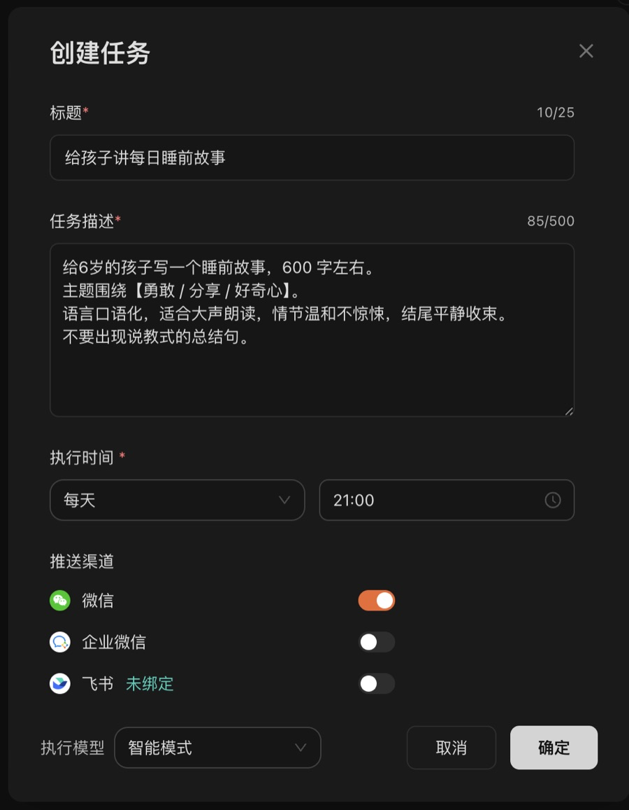
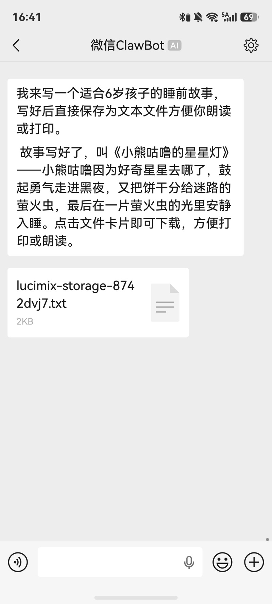

定时任务 · 3–8 岁孩子家长
每晚 9 点
一个新的
睡前故事
故事书讲完了也不慌。
打开微信，就有一个能直接念的故事。
Lucimix
3–8 岁娃的家长：绘本讲完了，每晚 9 点自动收到一个新故事
家里的绘本翻来覆去讲了好几遍，孩子一听开头就说「讲过了」。每天临睡前现编一个，真的很考验当妈的脑子。
后来我在 Lucimix 设了一个定时任务：每晚 9 点，一个新的睡前故事自动发到我微信，打开就能念。
怎么设置
进入「定时任务」，点创建任务：
- 标题：给孩子讲每日睡前故事
- 执行时间：每天 21:00
- 推送渠道：微信
可复制任务描述给6岁的孩子写一个睡前故事，600 字左右。
主题围绕【勇敢 / 分享 / 好奇心】。
语言口语化，适合大声朗读，情节温和不惊悚，结尾平静收束。
不要出现说教式的总结句。

我们家收到的第一个故事
第一天晚上收到的故事叫《小熊咕噜的星星灯》：小熊咕噜好奇星星去了哪里，鼓起勇气走进黑夜，又把饼干分给了迷路的萤火虫，最后在一片萤火虫的光里安静入睡。
勇敢、分享、好奇心，三个主题都讲到了，结尾也很安静，没有「所以小朋友要……」这种说教。

几个让故事更好听的小技巧
- 写上孩子的年龄：3 岁和 8 岁要的故事长度、用词完全不同。
- 主题定期换：最近孩子怕黑，就把主题改成「勇敢面对黑夜」。
- 加一句「不要说教」：故事会自然很多。
- 可以让主角用孩子的名字：孩子会特别爱听。
设置一次，之后每天晚上都有新故事。不用学 AI，也不用每天去想。
想要同款的话，上面那段任务描述复制走就能用。也可以直接点我分享的链接，一键创建，孩子年龄和主题都能改。